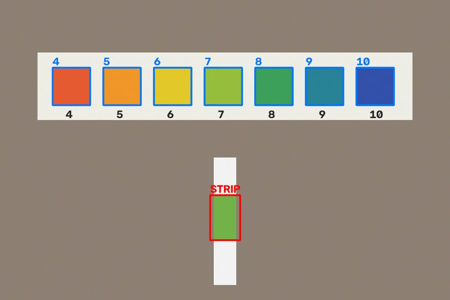
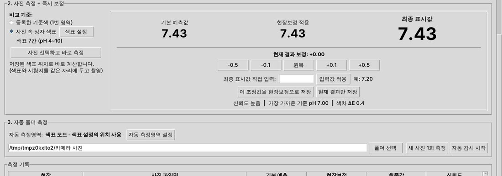

45
67
89
10
사용 안내
pH 색상 분석기 V6
시험지 사진의 색을 읽어 pH를 계산합니다. 시험지 상자의 색표와 같이 찍어 바로 비교하거나, pH를 아는 완충액으로 기준색을 직접 만들어 더 정밀하게 잴 수 있습니다.
웹 버전은 설치 없이 폰이나 PC 브라우저에서 바로 쓸 수 있습니다. 사진은 기기 안에서만 계산합니다. 화면 구성과 버튼 이름은 아래 설명과 조금 다르지만 순서는 같습니다.
Windows 프로그램
바로 실행 파일 받기
- 내려받은
pH_Analyzer_v6.exe를 더블클릭하면 바로 실행됩니다. 설치나 Python이 필요 없습니다.
- 처음 실행할 때 "Windows의 PC 보호" 파란 창이 뜨면 추가 정보 → 실행을 누르세요. 서명되지 않은 프로그램이라 나오는 안내입니다.
- 실행까지 10초 정도 걸릴 수 있습니다.
직접 빌드하는 경우
소스로 설치 (선택)
소스 파일 (.zip)을 받아 직접 EXE를 만들 수도 있습니다.
- python.org에서 Python 3.12를 설치합니다. 설치 첫 화면의 Add python.exe to PATH를 꼭 체크하세요.
- 내려받은 zip의 압축을 풉니다. 압축파일 안에서 바로 실행하면 안 됩니다.
BUILD_EXE_V6.bat을 더블클릭합니다. 필요한 프로그램 설치와 자체 검사가 자동으로 진행되고 몇 분 걸립니다.- SUCCESS가 나오면 열리는
dist 폴더에서 pH_Analyzer_v6.exe를 실행합니다. 바탕화면에 바로가기를 만들어 두면 편합니다.
빌드 중 오류가 나면 검은 창의 내용을 사진으로 찍어 전달해 주세요.
무엇으로 비교할지
두 가지 측정 방식
A · 간편
사진 속 상자 색표
색표와 시험지를 한 사진에 찍어 직접 비교합니다. 둘이 같은 조명을 받으므로 조명이 바뀌어도 결과가 유지됩니다.
- 준비
- 시험지 상자, 폰 거치대
- 설정
- 사진 1장으로 칸 위치 지정
- 정확도
- 대략 ±0.3~0.5 pH
B · 정밀
등록한 기준색
pH를 아는 표준 완충액으로 찍은 사진을 기준으로 씁니다. 흰색/회색 카드로 조명 색을 보정합니다.
- 준비
- 조명 상자, 그레이카드, 완충액
- 설정
- pH마다 3~5장 등록
- 정확도
- 잘 만들면 ±0.1~0.2 pH
처음에는 A로 시작하고, 더 정확해야 하면 B로 넘어가세요. 화면의 2. 사진 측정 영역 왼쪽 비교 기준에서 언제든 바꿀 수 있습니다.
방식 A
색표 모드로 측정하기
촬영 자리 만들기
- 거치대에 폰을 고정하고, 바닥에 테이프로 색표 자리와 시험지 자리를 나란히 표시합니다.
- 조명은 바로 위가 아니라 옆에서 비춥니다. 젖은 시험지는 위에서 비추면 반사가 생깁니다.
- 색표가 젖거나 바래지 않게 비닐에 넣거나 코팅해 두세요.
색표 설정 (처음 한 번)
- 색표와 시험지를 표시한 자리에 놓고 한 장 찍어 PC로 옮깁니다.
- 색표 설정 버튼을 누르고 그 사진을 고릅니다.
- 색표 칸을 낮은 pH부터 하나씩 드래그하고 Space. 다 고르면 Esc.
- 칸별 pH를 고른 순서대로 쉼표로 입력합니다. 예:
4, 5, 6, 7, 8, 9, 10
- 시험지 색 부분을 드래그하고 Enter.
- 위치 확인 그림에서 파란 칸(색표)과 빨간 칸(시험지)이 맞는지 보고 아무 키나 눌러 닫습니다.

위치 확인 그림 예시 (가상 사진)
매번 측정
- 시험지를 시료에 담갔다가 표시한 자리에 놓고, 정해진 시간 뒤에 촬영합니다.
- 비교 기준이 사진 속 상자 색표인지 확인합니다.
- 사진 선택하고 바로 측정을 누르고 사진을 고르면 영역 선택 없이 결과가 나옵니다.
- 기록하려면 현재 결과만 저장을 누릅니다.
프로그램은 칸의 위치와 pH만 기억합니다. 색은 측정할 때마다 그 사진의 색표에서 새로 읽기 때문에, 색표와 시험지는 매번 같은 자리에 두어야 합니다.
방식 B
기준색 모드로 측정하기
촬영 조건 고정
- 상자 안쪽에 무광 흰 종이를 붙이고, 주광색(5000~6500K) 고연색(CRI 90 이상) LED를 옆에서 비춥니다.
- 카메라 화이트밸런스와 노출을 고정합니다. 갤럭시는 프로 모드, 다른 안드로이드는 Open Camera 같은 수동 카메라 앱을 씁니다.
- 아이폰은 수동 카메라 앱이 필요하고, 설정 → 카메라 → 포맷 → 높은 호환성을 켜야 합니다. HEIC 사진은 열리지 않습니다.
- HDR, 뷰티, AI 장면 인식, 필터는 모두 끕니다. 18% 그레이카드를 매번 시험지 옆에 둡니다.
기준색 등록
- 흰색/회색 기준 카드로 색 보정을 체크합니다.
- 완충액마다 새 시험지로 3~5장씩 찍습니다. 측정할 범위보다 넓게, 최소 3가지 pH를 준비합니다.
- 해당 pH 칸의 사진+영역 선택을 누르고 사진을 한꺼번에 고릅니다. 6.86 같은 소수 값은 소수점 기준 추가를 씁니다.
- 사진마다 시험지 영역을 드래그하고 Enter, 이어서 카드 영역을 드래그하고 Enter. 잘못 골랐으면 c로 건너뜁니다.
- 정확도 검사 (교차검증)을 눌러 평균 오차를 확인합니다. 위쪽 보간 검사 값이 실제 정확도에 가깝습니다.
| 보간 검사 평균 오차 | 판단 | 다음 할 일 |
|---|
| ±0.2 이하 | 좋음 | 현장에서 사용 |
| ±0.2 ~ 0.5 | 보통 | 중간 pH 기준값 추가 (예: 7.5) |
| ±0.5 초과 | 문제 있음 | "가장 틀린 사진"의 반사광, 위치, 촬영 시간 확인 |
측정
비교 기준을 등록한 기준색으로 두고 사진 선택하고 바로 측정을 누른 뒤, 시험지 영역과 카드 영역을 차례로 드래그합니다.
결과 화면
결과 읽는 법

색표 모드 측정 화면 예시 (가상 사진)
| 기본 예측값 | 색으로 계산한 원래 값 |
|---|
| 현장보정 적용 | 기본값에 현장 보정값을 더한 값 |
|---|
| 최종 표시값 | 기록되는 값. ± 버튼이나 직접 입력으로 조정한 것까지 포함 |
|---|
| 신뢰도 | 높음 · 보통 · 낮음. 낮음이면 다시 찍는 것을 권장 |
|---|
| 경고 | 색표 범위 밖, 반사광 제외 비율, 영역 색 불균일 등 |
|---|
이 조정값을 현장보정으로 저장은 pH 미터와 비교했을 때 항상 같은 만큼 차이가 날 때만 쓰세요. 앞으로 그 현장의 모든 결과에 같은 값이 더해집니다.
선택 기능
자동 폴더 측정
폰 사진이 PC 폴더로 자동 동기화될 때 씁니다 (구글 드라이브, 원드라이브 등).
- 3. 자동 폴더 측정에서 폴더 선택으로 사진이 들어오는 폴더를 고릅니다.
- 색표 모드는 추가 설정이 없습니다. 기준색 모드는 자동 측정영역 설정을 한 번 해 줍니다.
- 자동 감시 시작을 누르면 10초마다 새 사진을 측정해 저장합니다. 기존 사진도 측정할지 처음에 물어봅니다.
기록
데이터 위치
모든 데이터는 C:\Users\사용자이름\pH_Analyzer_Data에 저장되고 프로그램을 꺼도 남습니다. 오른쪽 아래 데이터 저장 폴더 보기로 확인할 수 있습니다.
ph_results_v6.csv | 측정 결과 (엑셀로 열기) |
|---|
chart_profile_v6.json | 색표 칸 위치와 pH |
|---|
ph_training_v6.csv | 등록한 기준색. V5 데이터는 처음 실행 때 자동 변환되고 원본은 그대로 남음 |
|---|
accuracy_report_v6.csv | 정확도 검사 상세 결과 |
|---|
시작하기
처음 써 볼 때 순서
- 설치하고 프로그램을 실행합니다.
- 색표 모드로 색표를 설정합니다.
- pH를 아는 물 하나(pH 7 완충액, 또는 pH 미터로 잰 물)를 측정해 값이 맞는지 확인합니다.
- 차이가 크면 결과 화면을 캡처해 전달해 주세요.
시험지 사진으로 읽은 값은 참고용입니다. 결과로 중요한 판단을 하기 전에는 pH 미터로 확인하세요. 프로그램이 예측한 값으로 기준색을 등록하면 안 됩니다.